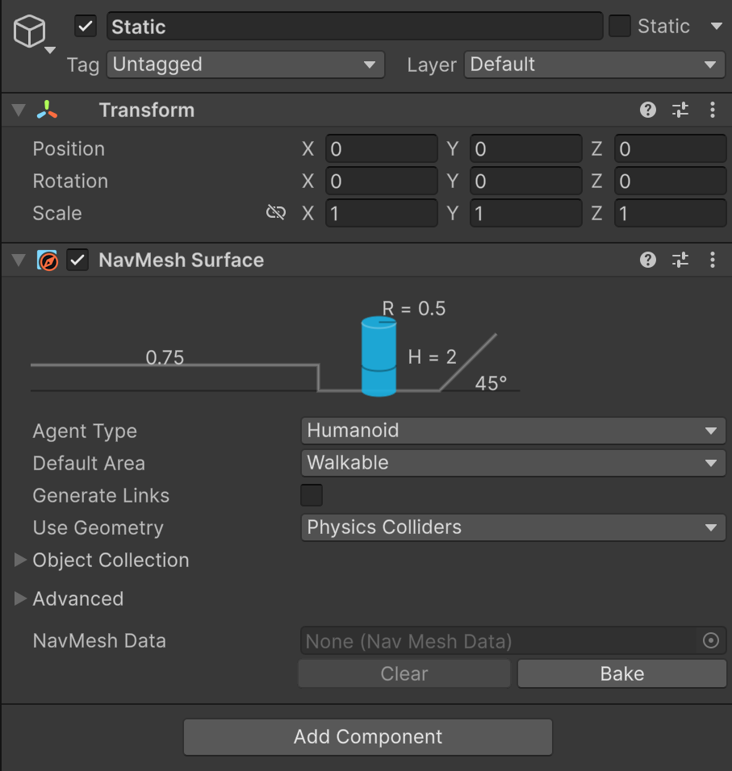
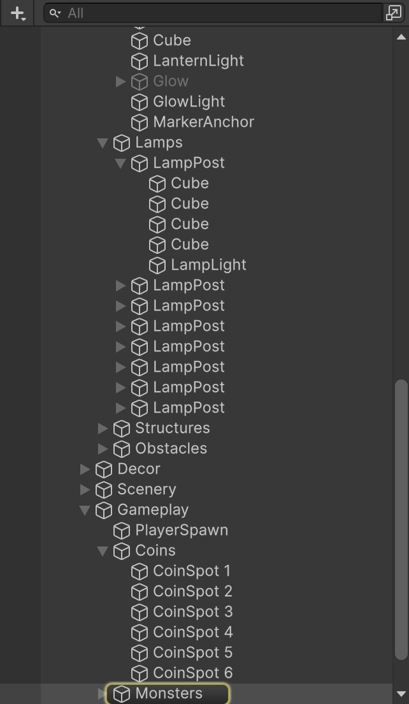
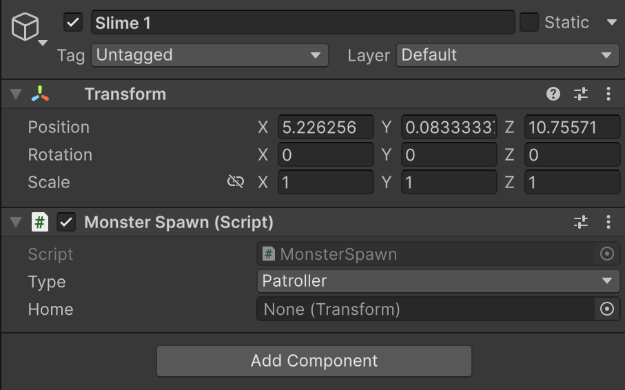
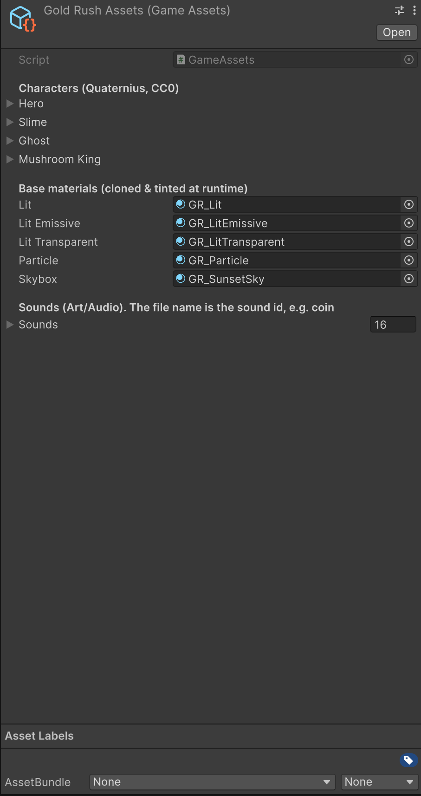
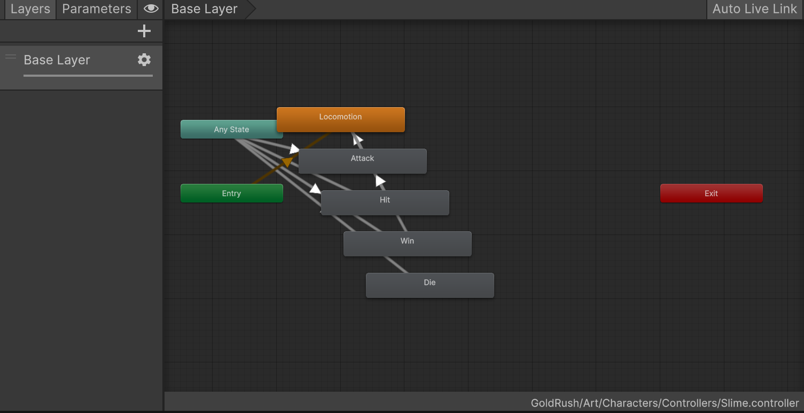

GOLD RUSH · Phase 7
Monsters
Now the yard is dangerous. Two Slimes patrol, see you, chase you, and search for you when you hide. They walk on a NavMesh, a walk map that the game builds from the level. The scene only has two MonsterSpawn markers: the monsters themselves, with their ITSTEP badge, are made by code at Play. If a monster catches you, you lose a heart. No hearts left: you lose the level.
1What you get
Everything from Phase 6, plus:
| New or explained in this phase | What it does |
|---|---|
NavMesh Surface on Static | Builds the walk map from the floor, walls and blocks. It is built again each time the level starts. |
Gameplay/Monsters with Slime 1, Slime 2 | MonsterSpawn markers: which monster, and where it starts. |
EnemyAI.cs | The monster brain: patrol, alert, chase, search, stunned. |
Badge.cs | The ITSTEP name patch on each monster's chest. |
Slime, Ghost, MushroomKing controllers | In Art/Characters/Controllers. Same layout as the Hero controller. |
| GameManager: hearts | Hits, lives, knockback, lose. |
New in the scene: the NavMesh Surface and the two markers. The scripts and controllers were already in every package since Phase 1; this phase explains them.
Package: GoldRush_Export/Packages/GoldRush_Phase07_Monsters.unitypackage. It needs the AI Navigation package (com.unity.ai.navigation) from Phase 0.
2Import the package
- Make a new Universal 3D project and set it up like in Phase 0. Check Window → Package Manager → In Project: AI Navigation is there. Or delete the folder
Assets/GoldRushin your project first. - Assets → Import Package → Custom Package… →
GoldRush_Phase07_Monsters.unitypackage→ Import. - Wait for the compile. No red errors in the Console.
- File → Build Profiles → Scene List:
Scenes/MainMenu(number 0), thenScenes/Level1. - Open
Assets/GoldRush/Scenes/Level1.unity.
3Check
3.1 The NavMesh Surface
Select Level 1 - Training Yard/Static. It has a NavMesh Surface: Agent Type Humanoid, Use Geometry Physics Colliders (only things with a collider count), and under Object Collection: Collect Objects = Current Object Hierarchy (only Static and its children). NavMesh Data is None: the GameManager builds it at Play, so you can move walls and it still works.

3.2 The monster markers
Open Level 1 - Training Yard/Gameplay/Monsters. There are two markers, Slime 1 and Slime 2. They have no children: no model, no monster yet.

3.3 One MonsterSpawn
Select Slime 1. Position about 5.2, 0.08, 10.8 (Slime 2: about 14.3, 0.08, -9.4). The Monster Spawn component has:
- Type =
Patroller. Patroller = Slime, Chaser = Ghost, Guard = Mushroom King. - Home =
None. Only a Guard uses it: it stays near this point.
In the Scene view a green wire box shows the Slime's real height (0.95 m).

3.4 The monsters in GoldRushAssets
Select Assets/GoldRush/Resources/GoldRushAssets and open Slime, Ghost and Mushroom King. The code builds each monster body from these values.
| Field | Slime | Ghost | Mushroom King |
|---|---|---|---|
| Model | Slime (fbx) | Ghost (fbx) | MushroomKing (fbx) |
| Controller | Slime | Ghost | MushroomKing |
| Height | 0.95 | 1.3 | 2.6 |
| Walk / Run Speed | 0 / 0 | 0 / 0 | 1.48 / 2.11 |
Walk Speed 0 means "guess from the height". The Slime and the Ghost have no feet, so a guess is fine.

3.5 The Slime controller
Double-click Assets/GoldRush/Art/Characters/Controllers/Slime.controller. It has the same parameters and states as the Hero controller (Speed, Attack, Hit, Win, Die). Only the clips are different, so one script can drive every character.
| State | Slime | Ghost | MushroomKing |
|---|---|---|---|
| Locomotion 0 / 0.5 / 1 | Idle / Walk / Walk | Flying_Idle / Fast_Flying / Fast_Flying | Idle / Walk / Run |
| Attack | Bite_Front | Headbutt | Punch |
| Hit | HitRecieve | HitReact | HitReact |
| Win | Dance | Yes | Wave |
| Die | Death | Death | Death |

3.6 Play mode: a monster
Press ▶ Play. In the Hierarchy, open Dynamic (runtime): next to the coins there are two Monster_Patroller objects. Select one: it has a Nav Mesh Agent and Enemy AI. Its child Model is the Slime, and deep inside it (on the body bone) sits Badge_ITSTEP.

3.7 Play mode: the hearts
Look at the HUD: two hearts. Level 1 gives you 2 lives (the default in Data.cs).

4How it works
When the level starts, the GameManager rebuilds the NavMesh and makes one monster for each marker (Scripts/Gameplay/GameManager.cs):
foreach (var surface in scene.GetComponentsInChildren<NavMeshSurface>()) surface.BuildNavMesh();
foreach (var m in scene.GetComponentsInChildren<MonsterSpawn>())
{
Vector3 p = m.transform.position;
if (NavMesh.SamplePosition(p, out var hit, 3f, NavMesh.AllAreas)) p = hit.position; // onto the walk map
l.enemyPoints.Add(p);
l.enemyTypes.Add(m.type);
}
// later, in Build():
enemies.Add(EnemyAI.Create(layout.dynamicRoot, layout.enemyPoints[i], type, home, Def.enemySpeed, layout.half, UI.Markers));- A NavMesh is a map of where you can walk. A NavMeshAgent walks a GameObject over it: you say "go there" (
SetDestination) and it finds a path around the walls. SamplePositionmoves the start point onto the NavMesh (up to 3 m away).EnemyAI.Create()adds the NavMeshAgent, builds the model from GoldRushAssets, adds the ITSTEP badge (Badge.Attach) and a coloured glow that shines only at night.
EnemyAI is a state machine: a monster is always in exactly one state (Scripts/Gameplay/EnemyAI.cs):
switch (state)
{
case S.Patrol: Wander(); if (canSee) Go(S.Alert); break;
case S.Alert: FaceTowards(lastSeen, dt); if (stateTime > 0.45f) Go(S.Chase); break;
...
}
// catch check: monsters have no colliders
if (d.x * d.x + d.z * d.z < catchRadius * catchRadius) gm.OnPlayerCaught(this);| State | What the monster does | Goes to… |
|---|---|---|
| Patrol | Walks to random points, waits 0.8–2.4 s at each. | Alert when it sees you |
| Alert | Stops, turns to you for 0.45 s, plays the alert sound, shows "!". | Chase |
| Chase | Runs to you, new path every 0.12 s. | Search after 2.2 s without seeing you |
| Search | Goes to where it saw you last, shows "?", spins for 2.2 s. | Patrol (or Alert again) |
| Return | Only the Mushroom King: walks back home. | Patrol |
| Stunned | After it caught you: spins for 2.6 s, shows "z". | Search |
| Monster | Patrol / chase speed | Sees you from | Field of view |
|---|---|---|---|
| Slime (Patroller) | 1.5 / 3.6 m/s | 8.5 m | 130° in front |
| Ghost (Chaser) | 2.1 / 4.6 m/s | 12 m | all around |
| Mushroom King (Guard) | 1.2 / 4.2 m/s | 9.5 m | 200° in front, stays near home |
- Level 1 multiplies all speeds by
enemySpeed = 0.9. After the last coin, every monster gets 10 % faster (Enrage(1.1f)). Vision()runs about 7 times a second: in range, in the field of view, and no wall in between (a raycast)? Closer than 3.2 m, a monster sees you even from behind.- Caught (closer than 1.05 m; the King 1.6 m):
OnPlayerCaught()takes one heart, shakes the camera, pushes you away and makes you safe for 2.2 s. The monster is stunned. At 0 hearts,Lose()(Phase 6) runs.
5▶ Press Play
You should see:
- Two Slimes wander around the yard. They walk around blocks, not through them. Each wears a small ITSTEP patch.
- Walk in front of a Slime: "!" and the alert sound, then it chases you. The music gets faster.
- Hide behind a wall: after a moment it shows "?" and searches the last place it saw you.
- Let it catch you: you fly back and blink, the camera shakes, one heart is gone, OUCH! Last life — be careful!. The Slime spins.
- Get caught again: slow motion, the hero falls, the Slimes dance, and the lose dialog opens.
- Collect all gold: the monsters get faster. Run to the gate!

6Try it
- A Ghost. Select
Slime 2. Set Monster Spawn → Type toChaser. Press Play: a fast Ghost that sees all around. TryGuardtoo: a big Mushroom King that stays near its start. - A fast Slime. In
Scripts/Gameplay/EnemyAI.cs, inConfigure(), find thePatrollerline and changechaseSpeed = 3.6fto6f. Can you still run away (sprint is 8.2)? - Another badge. In
Scripts/Gameplay/Badge.cs, changeDefaultText = "ITSTEP"to"STEP". The pixel font only knows the letters I, T, S, E, P and a space. Add a letter toGlyphs(7 rows of 5 characters) to write other words.
Change everything back when you are done, so Level 1 stays easy.
7Common problems
| Problem | Fix |
|---|---|
| Error: "The type or namespace name 'Unity.AI.Navigation' could not be found". | Install AI Navigation in the Package Manager (Phase 0). |
| I cannot find the monsters in the Hierarchy. | Normal. They exist only in Play mode, under Dynamic (runtime). |
| Monsters stand still: "SetDestination" can only be called on an active agent that has been placed on a NavMesh. | The marker is on a block or outside the walls. Move it onto the free floor. Static must keep its NavMesh Surface. |
| Monsters walk through a wall. | The wall has no collider, or it is not inside Static. |
| A monster is invisible. | Fill Model and Controller for that monster in GoldRushAssets (check 3.4). |
| Monsters never see me. | Something with a collider is in the way. (The hero is on Ignore Raycast, so he does not block the view himself.) |
More fixes are on the Troubleshooting page.
Checkpoint package: GoldRush_Phase07_Monsters.unitypackage